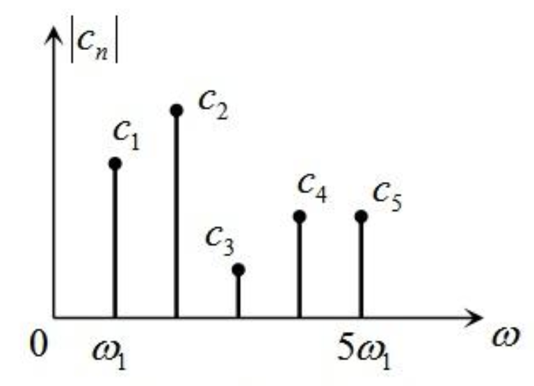

1. 傅里叶变化
1.1 傅里叶变换和逆变换公式
1.1.1 连续傅里叶变换 (Continuous Fourier Transform)
- 公式： \(X(f) = \int_{-\infty}^{\infty} x(t) e^{-j 2\pi f t} \, dt\)
其中： - \(x(t)\)：时域信号。 - \(X(f)\)：频域信号（频谱）。 - \(f\)：频率，单位为赫兹 (Hz)。
1.1.2 连续傅里叶逆变换 (Inverse Continuous Fourier Transform)
- 公式： \(x(t) = \int_{-\infty}^{\infty} X(f) e^{j 2\pi f t} \, df\)
其中： - \(X(f)\)：频域信号。 - \(x(t)\)：重建回来的时域信号。
1.1.3 离散傅里叶变换 (Discrete Fourier Transform, DFT)
对于离散信号 \(x[n]\)： - 公式： \(X[k] = \sum_{n=0}^{N-1} x[n] e^{-j \frac{2\pi}{N} kn}, \quad k = 0, 1, 2, \dots, N-1\)
其中： - \(x[n]\)：时域离散信号。 - \(X[k]\)：频域离散信号。
1.1.4 离散傅里叶逆变换 (Inverse Discrete Fourier Transform, IDFT)
- 公式： \(x[n] = \frac{1}{N} \sum_{k=0}^{N-1} X[k] e^{j \frac{2\pi}{N} kn}, \quad n = 0, 1, 2, \dots, N-1\)
其中： - \(X[k]\)：频域离散信号。 - \(x[n]\)：重建回来的时域信号。
1.2 公式中的关键点
1.2.1 正负号区别：
- 傅里叶变换中，指数部分为 \(e^{-j 2\pi f t}\)（正弦和余弦分量）。
- 逆变换中，指数部分为 \(e^{j 2\pi f t}\)（相位相反）。
1.2.2 连续 vs 离散：
- 连续变换涉及积分（时域到频域，或频域到时域）。
- 离散变换涉及求和（用于离散信号处理）。
1.2.3 归一化系数：
- 对于连续傅里叶变换，不需要显式归一化系数。
- 对于离散傅里叶逆变换，需要除以信号长度 \(N\)。
1.3 示例
1.3.1 连续信号示例
时域信号：\(x(t) = \cos(2\pi f_0 t)\)
-
傅里叶变换： \(X(f) = \frac{1}{2}[\delta(f - f_0) + \delta(f + f_0)]\)
-
逆变换： \(x(t) = \int_{-\infty}^\infty \left[\frac{1}{2}\delta(f - f_0) + \frac{1}{2}\delta(f + f_0)\right] e^{j 2\pi f t} \, df\) 得到 \(x(t) = \cos(2\pi f_0 t)\)。
1.3.2 离散信号示例
时域信号：\(x[n] = [1, 2, 3, 4]\)
-
傅里叶变换： 使用离散傅里叶变换公式计算 \(X[k]\)。
-
逆变换： 使用逆变换公式计算 \(x[n]\)，重建信号。
1.4 离散信号做傅里叶变换的例子
1.4.1 离散信号
假设一个长度为 \(N=4\) 的离散信号：
我们用离散傅里叶变换 (DFT) 的公式计算其频域信号 \(X[k]\)。
1.4.2 DFT 公式
1.4.3 计算步骤
-
信号长度 \(N=4\)，频率索引 \(k = 0, 1, 2, 3\)。
-
指数项：\(e^{-j \frac{2\pi}{N} kn} = e^{-j \frac{\pi}{2} kn}\)。
-
分别计算 \(k = 0, 1, 2, 3\) 时的 \(X[k]\)：
1.4.4 k = 0
1.4.5 k = 1
计算每一项:
- \(x[0] = 1\)
- \(x[1] e^{-j \frac{\pi}{2}} = 2 \cdot (-j) = -2j\)
- \(x[2] e^{-j \pi} = 3 \cdot (-1) = -3\)
- \(x[3] e^{-j \frac{3\pi}{2}} = 4 \cdot j = 4j\)
相加：
1.4.6 k = 2
计算每一项：
- \(x[0] = 1\)
- \(x[1] e^{-j \pi} = 2 \cdot (-1) = -2\)
- \(x[2] e^{-j 2\pi} = 3 \cdot 1 = 3\)
- \(x[3] e^{-j 3\pi} = 4 \cdot (-1) = -4\)
相加：
1.4.7 k = 3
计算每一项：
- \(x[0] = 1\)
- \(x[1] e^{-j \frac{3\pi}{2}} = 2 \cdot j = 2j\)
- \(x[2] e^{-j 3\pi} = 3 \cdot (-1) = -3\)
- \(x[3] e^{-j \frac{9\pi}{2}} = 4 \cdot (-j) = -4j\)
相加:
1.5 结果汇总
频域信号 \(X[k]\) 为：
1.6 解释
- \(X[0] = 10\)：直流分量，表示信号的平均值。
- 其余 \(X[k]\)：表示信号的其他频率分量，包括振幅和相位。
1.7 可视化频谱
- 幅值 \(|X[k]|\)：
$$ |X[0]| = 10, \quad |X[1]| = \sqrt{(-2)^2 + 2^2} = \sqrt{8}, \quad |X[2]| = 2, \quad |X[3]| = \sqrt{8} $$
- 相位 \(\text{arg}(X[k])\)：
$$ \text{arg}(X[1]) = \arctan\left(\frac{2}{-2}\right) = \frac{3\pi}{4}, \quad \text{arg}(X[3]) = \arctan\left(\frac{-2}{-2}\right) = -\frac{3\pi}{4} $$
1.8 傅里叶变换后的系数代表的性质
1.8.1 幅值（Magnitude）
幅值 \(|X(f)|\) 或 \(|X[k]|\) 表示信号在某个频率上的强度或能量分布。
- 较大的幅值意味着信号在该频率上具有较强的成分。
- 较小的幅值意味着该频率上的成分较弱，甚至可以忽略。
示例： - 如果信号主要是一个频率为 \(f_0\) 的正弦波，其频谱在 \(f = f_0\) 和 \(f = -f_0\) 处有峰值。 - 多个频率成分的信号在对应频率位置会出现多个峰值。
1.8.2 相位（Phase）
相位 \(\text{arg}(X(f))\) 或 \(\text{arg}(X[k])\) 表示信号在对应频率上的相位偏移。
- 相位决定了该频率成分的正弦波（或余弦波）在时间上的偏移。
- 改变相位会改变信号的时域表现，但不会影响其能量。
示例： - 如果信号的相位为零，频率成分与时间轴对齐。 - 非零相位表示该频率成分的时间偏移量。
1.8.3 直流分量（DC Component）
当频率 \(f = 0\) 或 \(k = 0\) 时的系数 \(X(0)\) 或 \(X[0]\) 表示信号的平均值，称为直流分量。
- 如果信号的平均值为零（例如纯交流信号），直流分量为零。
- 如果信号有非零平均值，则 \(X[0]\) 对应该值。
1.8.4 频率分量
每个傅里叶系数 \(X(f)\) 或 \(X[k]\) 对应于信号在某个特定频率上的贡献。
- 连续傅里叶变换中的 \(X(f)\)：对应连续频率 \(f\)。
- 离散傅里叶变换中的 \(X[k]\)：对应离散频率 \(k \cdot f_s / N\)，其中 \(f_s\) 是采样频率，\(N\) 是信号长度。
1.8.5 能量和功率
通过帕塞瓦尔定理，傅里叶变换的系数可以用来计算信号的总能量或功率：
- 连续信号的能量：
$$ E = \int_{-\infty}^\infty |x(t)|^2 dt = \int_{-\infty}^\infty |X(f)|^2 df $$
- 离散信号的能量：
$$ E = \sum_{n=0}^{N-1} |x[n]|^2 = \frac{1}{N} \sum_{k=0}^{N-1} |X[k]|^2 $$
1.8.6 对称性
如果信号是实值信号（例如音频信号）： - 频谱关于零频对称：
$$ X(-f) = \overline{X(f)} \quad \text{（共轭对称）} $$
对于离散信号：
$$ X[N-k] = \overline{X[k]} $$
如果信号是偶函数或奇函数，频谱也会表现出对称性或反对称性。
1.8.7 频域分辨率
傅里叶系数的数量和间隔取决于信号的采样率和长度： - 信号长度越长，频域分辨率越高（频率间隔越小）。 - 如果信号是周期信号，其频谱会表现为离散的峰值。
1.9 总结
傅里叶变换后的系数主要描述信号的以下性质： 1. 频率成分的强度（幅值）。 2. 频率成分的时间偏移（相位）。 3. 信号的直流分量（零频分量）。 4. 信号的频率分布和能量分布。
这些性质共同定义了信号在频域中的表现，是信号分析和处理的基础。
1.10 角频率与频率
1.10.1 频率（Frequency）
- 定义：频率表示信号每秒完成振荡的次数，通常用符号 \(f\) 表示。
- 单位：赫兹 (Hz)，即每秒振荡的周期数。
- 公式：
$$ f = \frac{1}{T} $$
其中 \(T\) 是信号的周期，表示完成一次完整振荡所需的时间。
示例： - 一个信号每秒振荡 50 次，其频率为 \(f = 50 \, \text{Hz}\)。 - 电网交流电的频率通常为 \(50 \, \text{Hz}\) 或 \(60 \, \text{Hz}\)。
1.10.2 角频率（Angular Frequency）
- 定义：角频率表示信号每秒转过的弧度数，通常用符号 \(\omega\) 表示。
- 单位：弧度每秒 (rad/s)。
- 公式：
$$ \omega = 2\pi f $$
其中 \(2\pi\) 表示一个完整的圆（对应信号完成一个周期）。
角频率的物理意义： - 一个周期内，信号的相位变化为 \(2\pi\) 弧度（对应完整的一个波形）。 - 角频率是频率的另一种表示方式，更适合描述正弦波中的振荡特性。
1.10.3 频率与角频率的区别与联系
- 频率 \(f\) 描述的是信号在单位时间内的周期数（次/秒）。
- 角频率 \(\omega\) 描述的是信号在单位时间内的相位变化量（弧度/秒）。
- 它们之间的关系为：
$$ \omega = 2\pi f \quad \text{或} \quad f = \frac{\omega}{2\pi} $$
1.10.4 正弦波中的使用
在正弦波中： - 使用角频率的表达：
$$ x(t) = A \cos(\omega t + \phi) $$
其中： - \(\omega\) 是角频率（弧度/秒）。 - \(A\) 是振幅。 - \(\phi\) 是初始相位。
- 使用频率的表达：
$$ x(t) = A \cos(2\pi f t + \phi) $$
注意： - 角频率在正弦信号的数学分析中更为常用。 - 频率用于描述信号的周期性和计数特性。
1.10.5 示例对比
假设一个信号的频率为 \(f = 10 \, \text{Hz}\)： - 周期：
$$ T = \frac{1}{f} = \frac{1}{10} = 0.1 \, \text{秒} $$
- 角频率：
$$ \omega = 2\pi f = 2\pi \cdot 10 \approx 62.8 \, \text{rad/s} $$
这意味着每秒完成 10 个周期，同时每秒相位变化约为 \(62.8 \, \text{弧度}\)。
1.10.6 信号频谱图
点击链接查看信号频谱介绍  纵轴表示幅度，横轴表示角评率，忽略了相位信息。
1.10.7 总结
| 特性 | 频率 \(f\) | 角频率 \(\omega\) |
|---|---|---|
| 单位 | 赫兹 (Hz) | 弧度每秒 (rad/s) |
| 描述 | 每秒的周期数 | 每秒的相位变化量 |
| 关系 | \(f = \frac{\omega}{2\pi}\) | \(\omega = 2\pi f\) |
| 应用场景 | 周期性信号的描述 | 正弦波和动态系统的数学表达 |
2. 周期信号和非周期信号的频谱
2.1 周期信号与非周期信号的频谱
2.1.1 基本概念
- 周期信号的频谱是离散的，由基频及其整数倍（谐波）组成。 周期信号可以用傅里叶级数表示为：
$$ x(t) = \sum_{n=-\infty}^\infty c_n e^{j 2\pi n f_0 t} $$
其中 \(f_0 = 1/T\) 是基频，\(c_n\) 是傅里叶系数。
- 非周期信号的频谱是连续的，不能仅用基频及其整数倍的频率来表示。 非周期信号通常通过傅里叶变换得到频谱：
$$ X(f) = \int_{-\infty}^\infty x(t) e^{-j 2\pi f t} dt $$
它在整个频率轴上是连续分布的。
2.2 信号重建分析
2.2.1 完全重建
- 周期信号可以完全用基频及其整数倍的频率分量来表示。
- 非周期信号则不能完全重建，因为它的频谱是连续的，频率成分不局限于离散点。
2.2.2 近似重建
尽管非周期信号无法完全用离散频率成分来重建，但可以用有限个离散频率成分来近似重建，即：
当选取的频率点（\(N\) 较大）足够多时，可以近似模拟信号的主要特性，但这种方法有以下限制： - 模拟的结果是有限精度的。 - 对高频分量较丰富的信号，近似需要更多的频率点。
2.3 示例分析
2.3.1 周期信号示例
设 \(x(t) = \cos(2\pi f_0 t)\) 是一个周期信号，其频谱为：
显然可以用基频 \(f_0\) 的离散频率分量表示，无需额外频率。
2.3.2 非周期信号示例（矩形脉冲）
设 \(x(t)\) 是一个宽度为 \(T\) 的矩形脉冲：
其频谱为：
\(\text{sinc}(fT)\) 是一个连续函数，覆盖所有频率，不能完全用离散频率表示。但如果只取若干主要频率分量，可以近似重建。
2.3.3 带噪信号示例
对于非周期且带噪声的信号，其频谱可能分布在一个较宽的频率范围内，用离散频率分量只能部分近似重建，且高频部分的误差可能较大。
2.4 常见的频谱逼近方法
对于非周期信号，如果希望用离散频率表示，可以考虑以下方法：
2.4.1 离散傅里叶变换 (DFT)
- 将连续信号采样为离散信号，并用有限频率点的频谱表示。
- 结果是信号的频谱在有限频率点上的离散近似。
2.4.2 窗口化处理
- 非周期信号可以通过时间窗口截断，使其近似为有限时长的周期信号。
- 截断后的信号频谱会接近于离散频率分量，但会引入频谱泄露。
2.4.3 带宽限制
- 对非周期信号施加低通滤波器，去掉高频分量。
- 带宽限制后，信号频谱能更好地用有限离散频率模拟。
2.5 总结
- 完全重建：只有周期信号能完全用基频及其整数倍频率表示。
- 近似重建：非周期信号可以用有限个离散频率分量进行近似，但无法完全重建。
- 对于非周期信号，用离散频率表示的精度取决于：
- 频率分量的数量。
- 信号的频谱带宽。